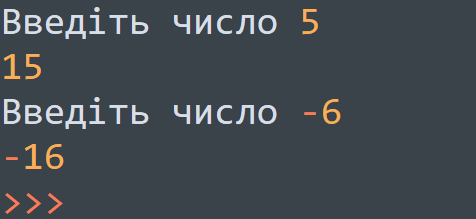
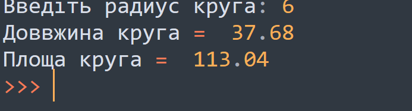
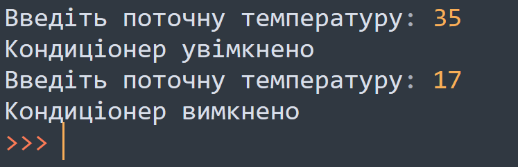

Тема 3.
Оператори
Теорія
Завдання
Завдання №1
Якщо число позитивне, то додайте до нього 10. Інакше відніміть від нього 10.

Завдання №2
Написати програму для розрахунку площі та довжини кола. Використовуючи if - else С = 2*P*r S = P *r**2

Завдання №3
Кондиціонер включається, якщо в кімнаті температура більша за 20 градусів; якщо температура 20 градусів або нижче, кондиціонер вимикається . Напишіть програму, яка визначить, що робитиме кондиціонер. Вводиться одне ціле число – поточна температура в кімнаті.
